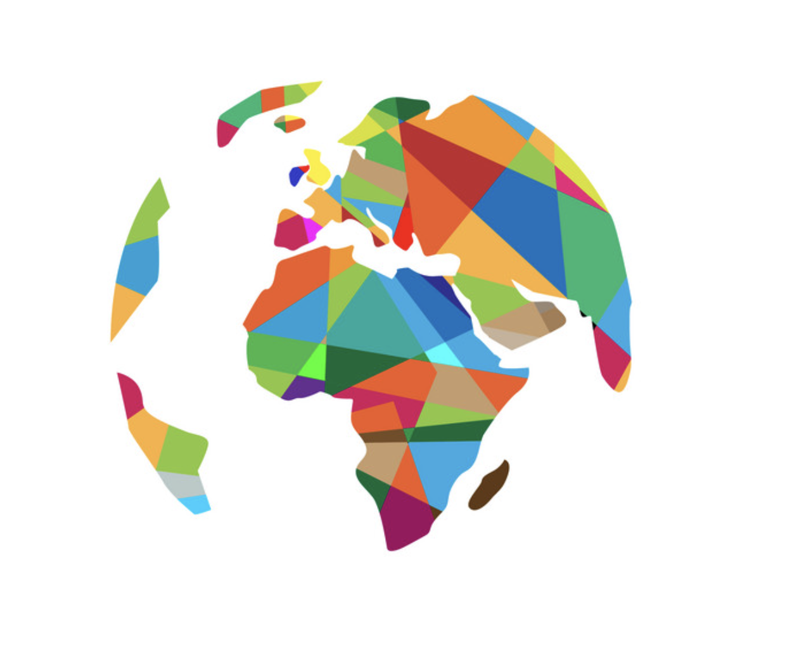

<div class="header-component container" fxLayout="row" fxLayoutAlign="space-between center">
    <div fxFlex="10">
        
    </div>
    <div fxFlex="10" *ngIf="(countryService.selectRegion$ | async) || (countryService.selectCountry$ | async)">
        <button (click)="back()" mat-raised-button color="primary">
            Back
        </button>
    </div>
</div>